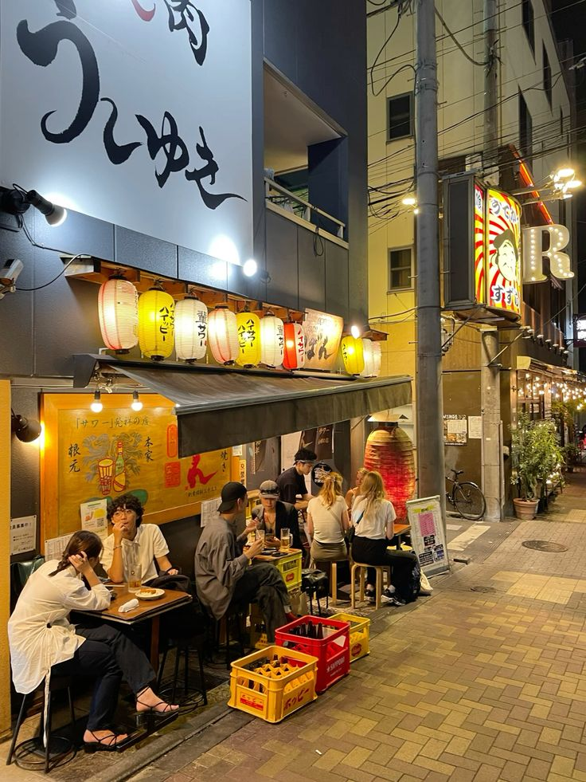
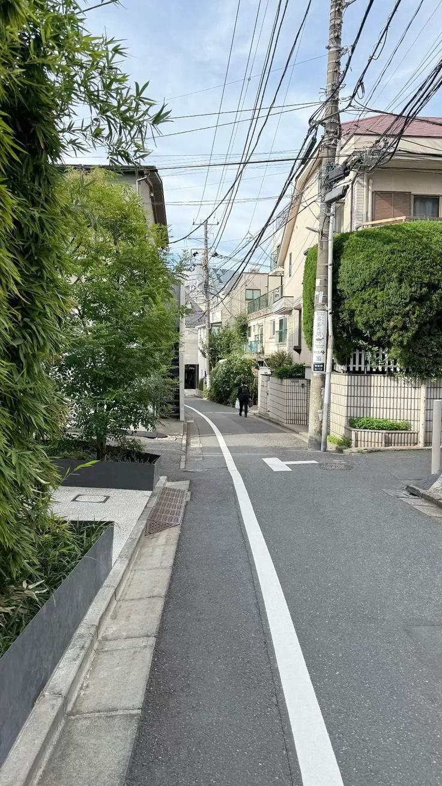

Peaceful walks
Wandering peaceful temple gardens before the day crowds arrive — a morning ritual that reveals a quieter, softer side of the city.
Read morePersonal stories, striking photography, and tips for exploring Japan.
Wandering peaceful temple gardens before the day crowds arrive — a morning ritual that reveals a quieter, softer side of the city.
Read more
Late-night alleys full of food stalls and small izakayas — a guide to tasting the city after dark.
Read more
Clear mornings reveal Mount Fuji's perfect cone — the best spots for sunrise reflections and quiet hikes nearby.
Read more